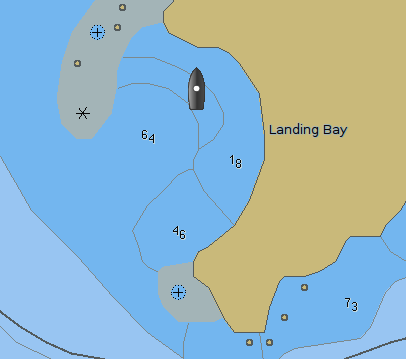
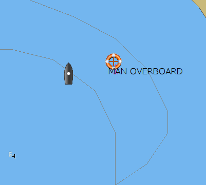
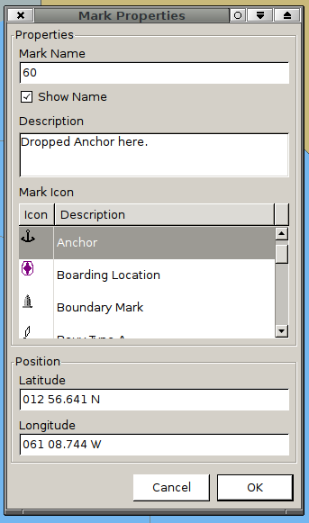
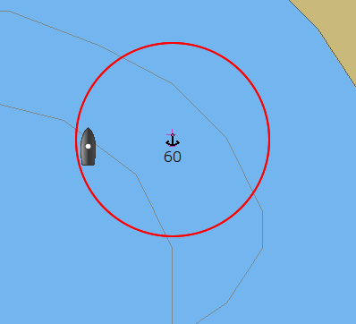
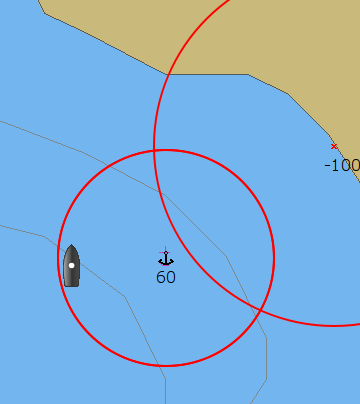
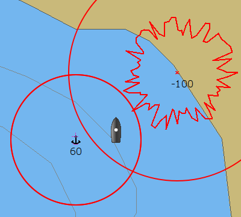
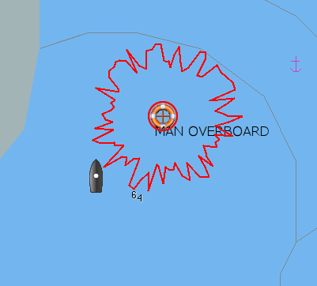

Anker Wache
Anker Wache kann an jeder Markierung gesetzt werden, die mit OpenCPN erzeugt wurde, solange das Boot nicht weiter als 5 Kabellängen (5/10tel Seemeilen) von der Markierung entfernt ist und die Marke nicht zu einem Layer gehört. Das heißt, daß die Ankerwachen Punkte mit dem Rechts-Klick Menü nur sichtbar sind, wenn das Boot innerhalb von 0,5 Seemeilen von jeder Marke ist. Maximal können 2 Marken zu gleicher Zeit als Ankerwache gesetzt sein. Die Restriktion bei Layern kann durch das Setzen einer neuen naheliegenden Markierung umgangen werden.
Dieses Feature kann auch in anderen Situationen als nur Ankern verwendet werden, aber die Beobachtung des Ankers und das Sicherstellen, daß er nicht abtreibt, ist die Hauptaufgabe. Unten verwenden wir das "Mann über Board" Symbol zur Markierung des Ankers. Das ist nur ein einfacher Weg und nicht erforderlich für eine funktionierende Ankerwache.
Zur Demonstration wie es geht, machen wir einen Trockenlauf mit einer kleinen Ankerung.

Nach der Rundfahrt und Erkundung der Bucht wissen wir, wo wir unseren Anker fallen lassen wollen.
Am gewählten Punkt lassen wir den Anker fallen und klicken gleichzeitig das Mann über Bord Symbol zur Markierung des Punktes.

Der Wind, ONO mit 15 Knoten, treibt uns zurück bis wir mit der ausgesteckten Kettenlänge zufrieden sind. Ein Motorschlag rückwärts gräbt den Anker ein, später überprüft mit einem Schnorchelgang über dem Anker. Zeit um die Ankerwache zu regeln.

Rechts-Klick auf die Mann über Bord Marke und Eigenschaften wählen bringt den Dialog "Markierung Eigenschaften". Wir müssen dort ein paar Dinge ändern, um es zur Ankerwache zu verwenden. "Markierung Name" wird geändert von "Mann über Bord" zu einem Wachkreis in Metern. In unserem Fall ändern wir es auf 60. Wir haben 40 Meter Kette raus, unsere GPS Antenne auf unserem 40 Fußer sitzt am Heckkorb, einige GPS Unsicherheiten und ein paar extra Meter für den Anker zum Eingraben sind die Gründe dafür. Wir ändern auch das Markierungs-Symbol auf etwas Besseres als den Rettungsring.

Wir machen nochmal einen Rechts-Klick und wählen "Ankerwache einstellen" vom Menü.
Siehe Bild oben. Die Ankerwache ist jetzt aktiv und ein Alarm wird gesetzt, wenn das Boot aus irgendwelchen Gründen den Kreis verläßt. Zum Deaktivieren der Ankerwache ein Rechts-Klick auf die Marke und "Ankerwache aufheben" wählen.
Zum Schutz vor Wind und ein wenig vor dem nördlichen Schwell haben wir wirklich zu nahe dem Strand geankert. Um diese potentielle Gefahr zu beobachten, setzen wir eine weitere Markierung am Strand.

Diesmal setzen wir "Markierungs Name" auf -100, das heißt, ist das Boot innerhalb von 100 Metern dieser Marke, wird der Alarm ausgeschaltet.

Nach einer Stunde und starkem Schwell läßt der Wind nach und wechselt. Das Boot driftet zum Strand und der Ankeralarm läutet und erscheint auf unserem Computer Bildschirm.
Der Alarm Klang ist wie bei einer AIS Warnung und wird in den Einstellungen unter der AIS Lasche eingestellt.

Das geschieht also, wenn die Ankerwache aktiviert wird, ohne den Namen zu ändern. Der Alarm ist sofort aktiviert. Löschen Sie die Ankerwache und lesen Sie von Beginn an.